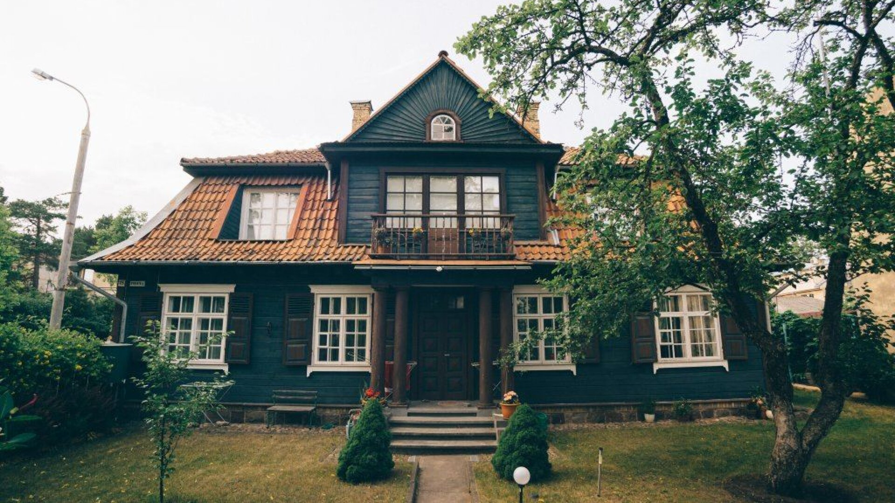

Gamta
Ežerai, miškai ir pažintiniai takai kviečia sulėtinti žingsnį.
Atrask Lietuvą
Gamta · Kelionės · Įspūdžiai
Kviečiame atrasti ežerus, miškus ir mažus miestelius. Dalijamės idėjomis kelionėms po Lietuvą.
Padėti atrasti įdomias vietas ir paskatinti keliauti atsakingai

Ežerai, miškai ir pažintiniai takai kviečia sulėtinti žingsnį.

Pilys, dvarai ir senamiesčiai pasakoja Lietuvos istorijas.

Jaukūs miesteliai ir vietinės tradicijos laukia smalsių keliautojų.

Smėlio kopos ir jūros ošimas kviečia atsikvėpti.

Vietos, kurias verta aplankyti.
Įkvėpimas trumpoms išvykoms

Paprasti patarimai gamtai saugoti